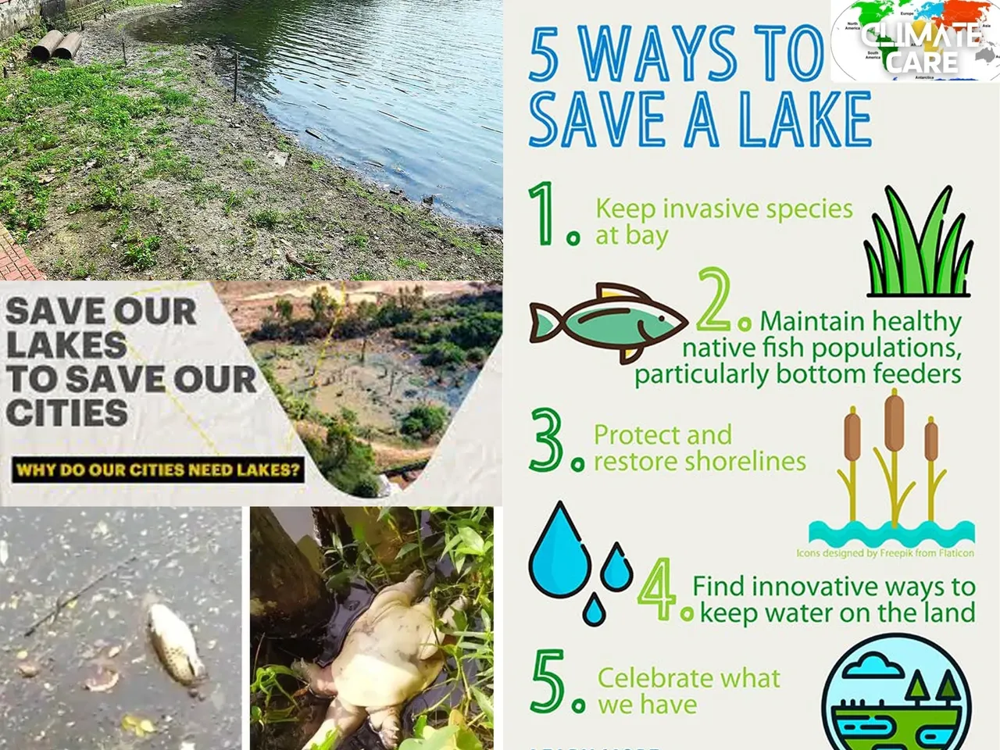
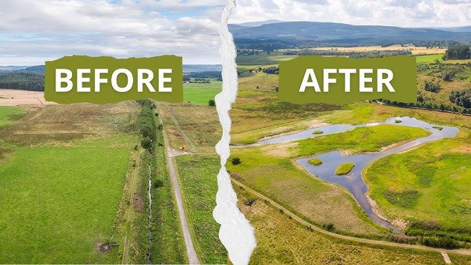
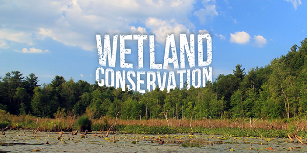

Conserving Our Water Bodies
Protect Lakes

Preserve lakes by reducing pollution and promoting cleanups to maintain ecosystems.
River Restoration

Restore rivers through afforestation and reducing industrial waste discharge.
Wetland Preservation

Protect wetlands to support biodiversity and natural water filtration systems.